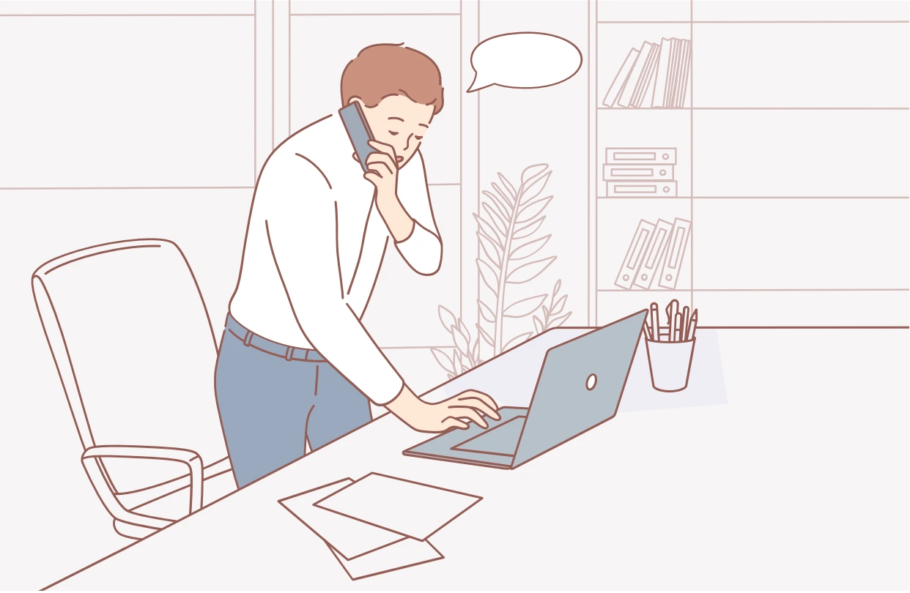

기본 수칙
- 늦게 받았다면 “늦게 받아 죄송합니다”라고 말합니다.
- 비어 있는 옆자리의 전화가 울리면 빠르게 당겨 받습니다.
- 전화를 건 사람의 신분과 목적, 통화를 희망하는 상대를 확인합니다.
- 마무리 인사를 건네고 전화를 건 사람이 먼저 끊도록 합니다.

이렇게 말합니다
전화를 받았을 때
소속과 이름을 먼저 밝힙니다.
안녕하십니까? ○○자생 □□팀 ㅇㅇㅇ입니다.
전화를 당겨 받았을 때
대신 받았음을 알립니다.
안녕하십니까? 전화 대신 받았습니다.
○○자생 □□팀 ㅇㅇㅇ입니다.
○○자생 □□팀 ㅇㅇㅇ입니다.
전화를 걸었을 때
신분과 용건을 밝히고 담당자와 통화할 수 있는지 확인합니다.
안녕하십니까? ○○자생 □□팀 ㅇㅇㅇ입니다.
◇◇건으로 연락 드렸는데 담당자와 통화 가능할까요?
◇◇건으로 연락 드렸는데 담당자와 통화 가능할까요?
전화를 끊을 때
끝인사를 전합니다.
감사합니다. / 좋은 하루 보내세요.
상황별 전화 응대
통화 중 상사·고객이 말을 걸 때
통화 상대에게 양해를 구하고 수화기를 막아 짧게 용건을 확인한 뒤 다시 통화합니다.
통화중에 죄송합니다만, 환자분이 문의하셔서요.
잠시만 기다려주시겠습니까?
잠시만 기다려주시겠습니까?
부재중인 동료에게 전화가 왔을 때
대신 받아 대화 내용을 메모하고, 끊기 전에 메모한 내용을 반복해 확인합니다.
안녕하십니까? 전화 대신 받았습니다. □□팀 ○○○입니다.
담당자가 현재 부재중입니다. 필요하시다면 메모 남겨드리겠습니다.
담당자가 현재 부재중입니다. 필요하시다면 메모 남겨드리겠습니다.
회의 중 전화가 왔을 때
원칙적으로 회의 중에는 받지 않습니다. 공적인 업무로 부득이하게 받아야 한다면 먼저 양해를 구합니다.
(팀장님) 말씀 중에 죄송합니다만, ◇◇건으로 고객이 전화를 걸어온 것 같습니다.
잠시 받으러 나갔다 와도 되겠습니까?
잠시 받으러 나갔다 와도 되겠습니까?